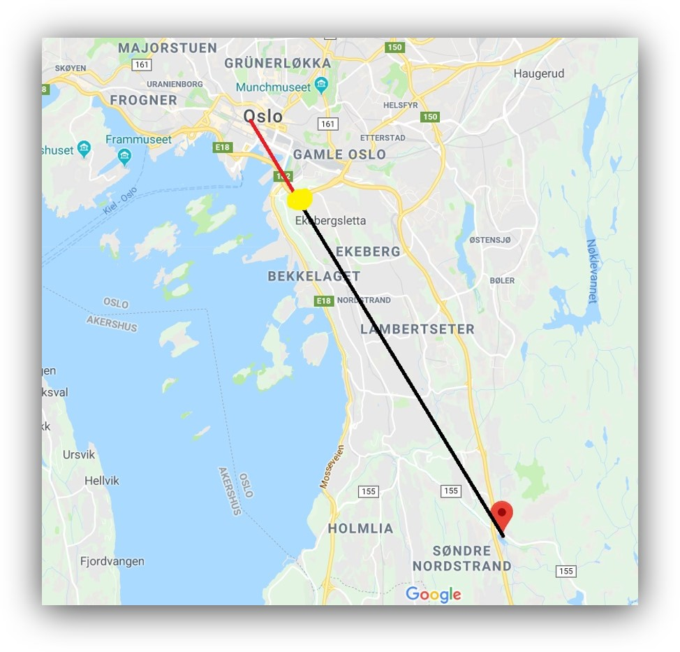

Our project involves over 1 km of railway lines, which will carry long trains moving between downtown Oslo and Gjersrud-Stensrud. We plan to build a transportation hub in the middle of Gjersrud-Stensrud, from here, people can either hop on the Monorail heading downtown, or reach their homes via small electric buses. Our goal is that the trip from Gjersrud-Stensrud to Oslo S will take as little as 15 minutes. This is faster than the current Metro, and also alot more comfortable.